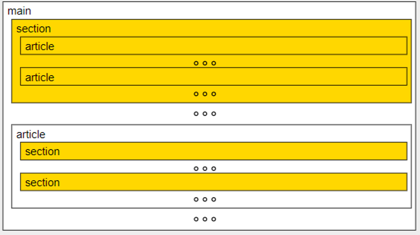

SECTION
La etiqueta SECTION está pensada para agrupar los apartados del contenido principal del documento.
Normalmente, las secciones SECTION empiezan con un título (h1, h2, etc.) que hace referencia al tema
tratado en la sección.
Un elemento SECTION puede contener elementos SECTION. Las secciones interiores se entienden como
subsecciones de la sección exterior
Un elemento SECTION puede contener elementos ARTICLE y viceversa.

Las etiquetas SECTION y ARTICLE son similares. La diferencia entre ellas es que ARTICLE
es para partes que forman una unidad en sí mismas y SECTION es para partes de una unidad mayor.